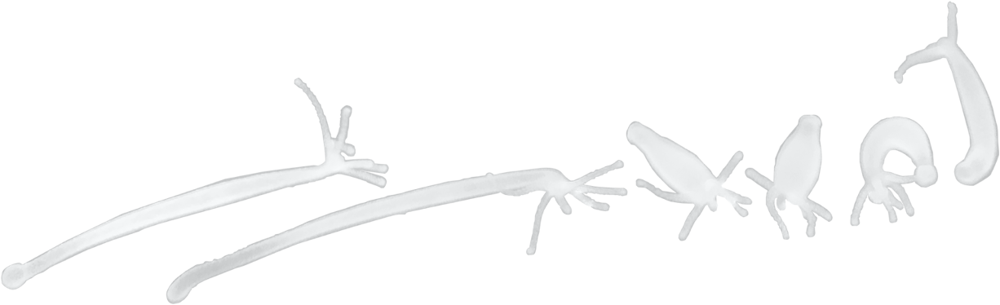
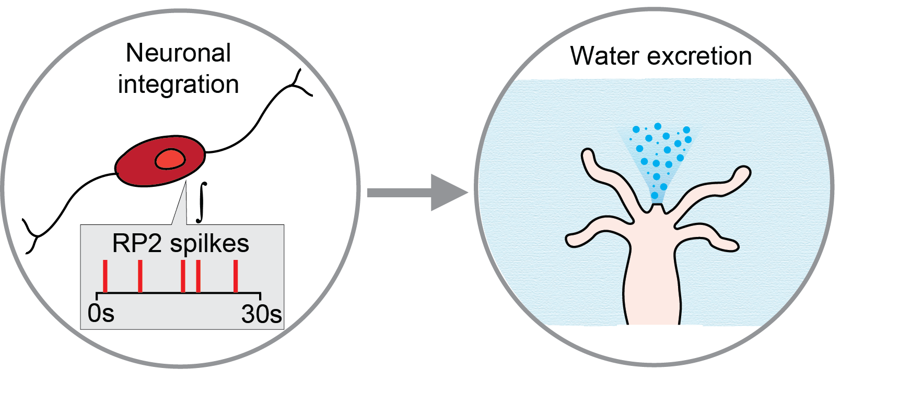
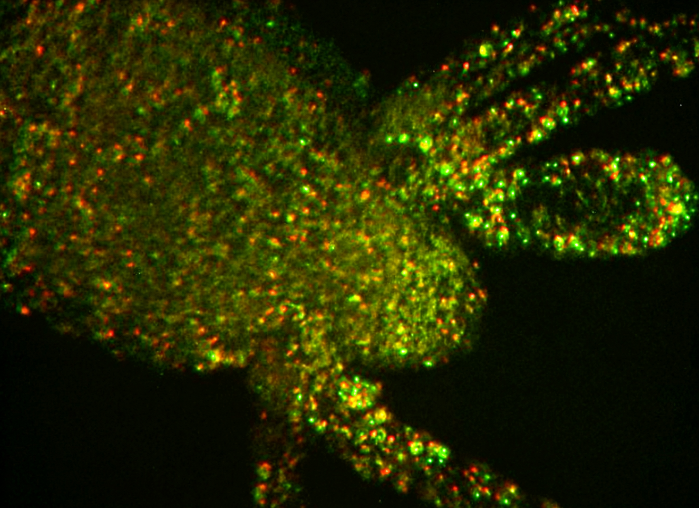
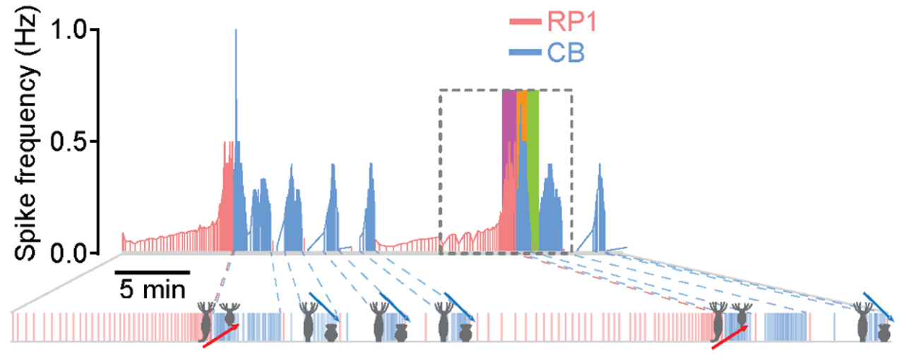
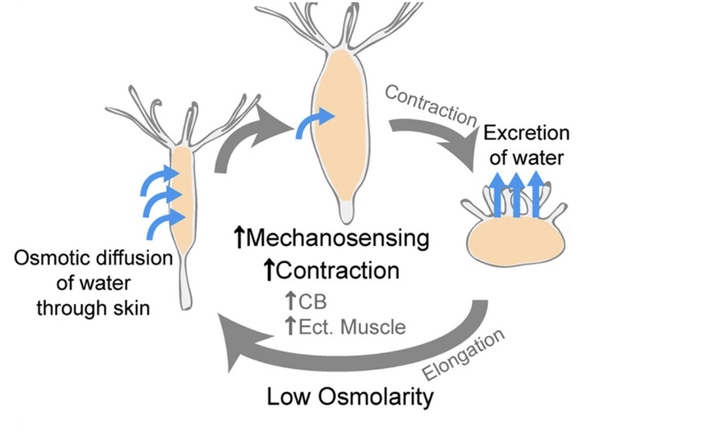
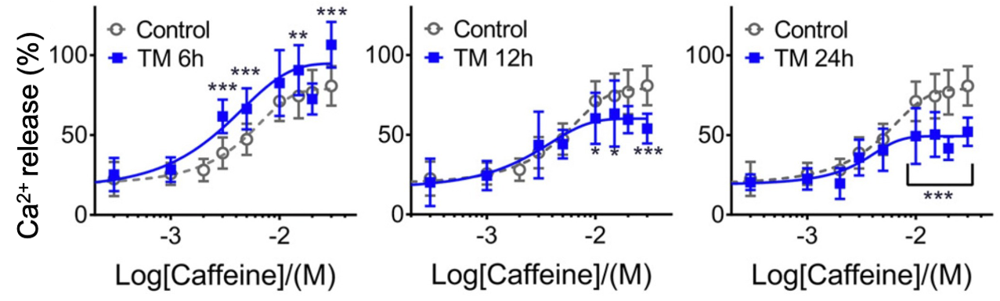

Yamamoto Lab at UALR
Home
Research
Publications
Team
Fun
Join
Publications

Google Scholar ↗

Control of water excretion in
Hydra vulgaris
by neural integration
W Yamamoto, R Yuste ·
Current Biology
· 2026

Automatic monitoring of neural activity with single-cell resolution in behaving
Hydra
A Hanson, R Reme, N Telerman, W Yamamoto, et al. ·
Scientific Reports
· 2024

Peptide-driven control of somersaulting in
Hydra vulgaris
W Yamamoto, R Yuste ·
Current Biology
· 2023

Whole-body imaging of neural and muscle activity during behavior in
Hydra vulgaris
: Effect of osmolarity on contraction bursts
W Yamamoto, R Yuste ·
eNeuro
· 2020

Endoplasmic reticulum stress alters ryanodine receptor function in the murine pancreatic β cell
WR Yamamoto et al. ·
Journal of Biological Chemistry
· 2019